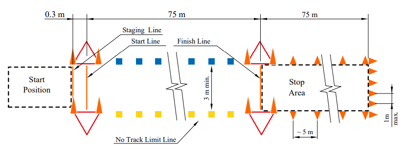
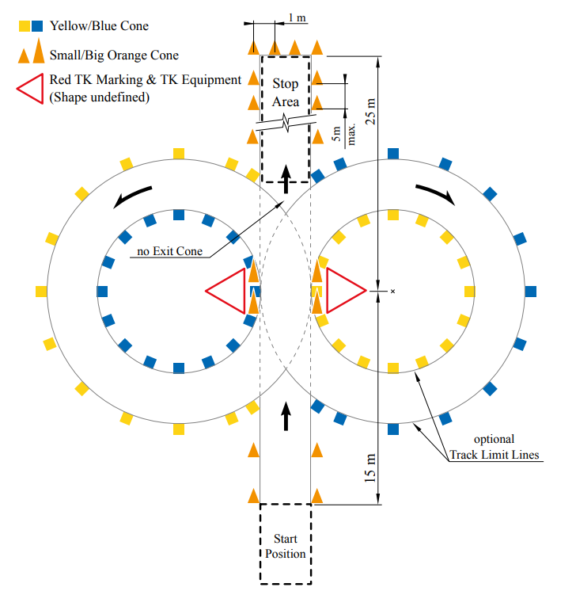

Weekly priorities
Oct 2 - Oct 9
-
Sim dev setup in Carmaker @Mohak Vyas
- github repo setup — [P0 !!] (blocking!)
- should be able to launch carmaker easily
- change topic names to common topic names chosen
- launch file for acceleration
- acceleration map ready — [P0] (blocking!)
- able to get ground truth info (cones/car location, speed, …) — [P1]
- github repo setup — [P0 !!] (blocking!)
-
Acceleration in carmaker @Deep Boliya @Mohak Vyas
goal: to complete under 5 sec in simulations

FSAI: 0.3m from starting line, 75m track length, 3m wide, 100m stopping length
- port → carmaker — [P0]
- improving accel based on to-dos — [P0]
- [x] tuning the pid
- [x] improving controller → differential one
- [ ] clamp steering (not do too much steering at any time) (ya to extreme case nahi aayega ya recover nahi hoga)
- [x] start mein teda krke chala ke dekho…
- start impelementing ‘alternate ways’ — [P1]
-
Skidpad ideation
goal: to complete under 20 sec in simulations

FSAI: The foremost part of the vehicle is staged 15m before the timekeeping line. Pehle right - second lap on right turn is timed. Then left turn - fourth lap on left is timed. must come to a full stop within 25m after crossing the timekeeping line
- come up with ways we can complete skidpad — [P0] @Ayush Rohilla @DEs
-
Perception specific
- able to run from a launch file (fix path error) @Yash Rampuria — [P0] (blocking!)
- researching on how to: @Yash Rampuria — [P1]
- improve latency in mono pipelines?
- improve range in stereo/mono pipeline?
- using nueral network: @tangri — [P0]
- lidar pipeline: @nakul — [P1]
- Find u v of a cone centre approximately and using step 3 ka result, find corresponding depth: ~2-3 days
- yolo retraining: @abhimanyu — [P1]
- sift on gpu @rajit - driver error — [P0] (blocking!)
-
Slam specific
- root cause for data association issue (in fsds, with fake meas) — [P0] @Shreyash Gupta (blocking!)
- update/correct full code according to a single ref
- do a 2very structured root cause analysis
- graphslam @Shreyash Gupta @rohan — [P1]
- figure out g2o & graphslam implementation (g2o, …?)
- start writting some code for… (what should we aim for initially?)
- porting fastslam → carmaker @Shreyash Gupta @arnav— [P1]
- better velocity estimation / odometry estimation method @amna — [P1]
- root cause for data association issue (in fsds, with fake meas) — [P0] @Shreyash Gupta (blocking!)
-
PPC specific
- get & understand psuedo-transient model from @chandu @Deep Boliya
- plan on delaunay triangulation
- Complete stanley implementation @ajinkya @ayush
- Get fsds working with ros bridge and implement Pure pursuit @shubham (blocking!)
- get fsds working, core dumped @ayush (blocking!)
Note
📌 JDEs trying to implement ppc without looking into code, interpolating + stanley controller + vel profile / pure-pursuit ~ 3-4 more days. They’re coming with some new ideas to implement.
-
Sys-int specific
- able to run iitbdv repo, with docker, on fsds rosbag (mono, mrpt, middle/raceline + accel) @bhaskar
- explore CAN in carmaker @MG
- figuring out gui in docker @vishwam
Note
❓ carmaker: cone ke white stripes nahi hone chahiye, road ke white stripes se interfere (have cone models with black stripes) @Mohak Vyas. Will we be able to do this?
-
Jetson — [P0]
- not booting up, try reinstalling / force recovery mode ubuntu @Mohak Vyas @vishwam (blocking!)
-
Team wiki completion — [P1]
- Perception: incorporate the feedbacks, more pages? @Yash Rampuria
- SLAM: complete MRPT page @Shreyash Gupta
- Sys int: incorporate the feedbacks, more pages (simulatation, bot) @Mohak Vyas @MG
-
Ideation on Trainee modules - [P2]
Recruitment might start late. Need a different/structured recruitment + trainee module plan so that:
- reach more freshers, when we’re starting recruitment late?
- min effort by team (a lot of time/effort goes for debugging errors / installing in the modules)
- structured week-by-week content with assignments documented on docs / github
- meeting with trainees one time a week?
- a good efficient outcome (we gave 4 months, but they still some have installation issues + need to more training to be able to contribute to their subsystem).
- should we spend less time in modules, and make JDEs faster so they’ve more time to learn their subsytems?
- how to improve SLAM module? - no first pref till now ☹️
Sept 26 - Oct 1 [12/27 = 44%]
-
Sim dev setup in Carmaker @Mohak Vyas ❌
- github repo setup — [P0 !!]
- should be able to launch carmaker easily
- change topic names to common topic names chosen
- launch file for acceleration
- able to get ground truth info (cones/car location, speed, …) — [P0]
- acceleration map ready — [P0]
- github repo setup — [P0 !!]
-
Acceleration in carmaker @Deep Boliya
0.3m from starting line, 75m track length, 3m wide, 100m stopping length
-
list alternative ways to complete acceleration — [P0] ✅
- seeing first few cones & interpolating to get boundary paths
- to stay within boundary, we’ll need to know our location → use odometry
- initial cones might not be accurate enough → lines might not be very straight
- [ ] plot in rviz to test this
- using Lidar
- only orientation
- based on assumption that car is staged centered + we can get accurate yaw for a while from imu
- seeing first few cones & interpolating to get boundary paths
-
bearing method (fix the stopping position, Thu night) → carmaker — [P0] ✅
- what are possible wrong outcomes, with this implementation?
- on ads-dv will need to aim for an ideal speed to follow, such that pts max + are able to stop safely within 100m (depends on the stopping potential)
Note
🚀 FSDS mein:
- speed 4ms se zyaada nhi
- off track jaate hi gone case
- can we use orientation of car to further improve this??
- using total distance travelled as stopping logic… assuming distance from encoder data to be pretty acurate (as per deep’s experience with ADS-DV), if ads-dv isn’t giving accurate distance tune it there to go more than 75m or less than 75m as req…
further to dos:
- start mein teda krke chala ke dekho…
- AS_FINISH logic, and successfully return ‘AS_FINSIH’ on terminal - can be done when we port → Carmaker
- tuning the pid
- improving controller → differential one
- clamp steering (not do too much steering at any time) (ya to extreme case nahi aayega ya recover nahi hoga)
- weighted sum with orientation (not much weight)
- if off track: yellow/blue identify karke make a turn (if speed is enough, we might not have enough time to see all yellow & deicide to make a turn)
-
start impelementing ‘alternate ways’ — [P1] ❌
-
-
Perception specific
- able to run from a launch file (fix path error) @Yash Rampuria — [P0] ❌
- researching on how to: @Yash Rampuria — [P1] ❌
- improve latency in mono pipelines?
- improve range in stereo/mono pipeline?
- lidar pipeline: @nakul @abhimanyu — [P1]
- Put the transformation matrix in a variable as a multiplication of 3 4 different transformations (exteinsic intrinsic etc) ✅
- Learn how to read pcd data ✅
- Pcd has data in the format (x y z I) and u need to convert it to (u v depth) ✅
- Find u v of a cone centre approximately and using step 3 ka result, find corresponding depth - ~ 2-3 days ❌
- sift on gpu @rajit - driver error ❌
Note
❓ Mono giving different sizes of bounding box for one side → some bias in depth → perception + slam: deviating from straight. @Yash Rampuria what are we doing about this??
-
Slam specific
- root cause for data association issue (in fsds, with fake meas) — [P0] @Shreyash Gupta ❌
- graphslam: come up with a plan @Shreyash Gupta @rohan — [P1]
- collect resources ✅
- get overview of the algo ✅
- examples on how it can be implemented (g2o, …?) ❌
- porting fastslam → carmaker @Shreyash Gupta @arnav— [P1] ❌
- better velocity estimation method @amna — [P1] ❌
- ~~porting mrpt → carmaker??? (ho rakha hai)~~
-
PPC specific
- @Deep Boliya to add jde tasks for this week ❌
Note
📌 JDEs trying to implement ppc without looking into code, interpolating + stanley controller + vel profile / pure-pursuit ~ 3-4 more days. Through this they’re coming with some new ideas to implement.
-
Sys-int specific
-
ros2 karna hai ki nahi? (~1-2 din mein decide) — [P1] @Mohak Vyas ✅
nahi for now: faaltu bt nhi lena hai / ros2 has a better way to send msgs than ros1 (less delays due to truely parallel architecture) / ros1 noetic eol in 2025, have two years atleast / we’re all familiar with ros1, will take some to get used to ros2 as well
-
docker: plan for integrating (~1-2 din) — [P0] @MG @jdes ✅
-
what should the final output be like?
(what all will it ‘contain’? system requirements, probably require nvidia graphic cards?)
-
things the docker should contain https://docs.google.com/document/d/1ojJ-bONWIKGVy3xhxL1UiQXZqVMYcOj-czewkg0QXAo/edit
-
Note
❓ carmaker: cone ke white stripes nahi hone chahiye, road ke white stripes se interfere (have cone models with black stripes) @Mohak Vyas. Will we be able to do this?
-
-
Jetson — [P0]
- not booting up, try reinstalling / force recovery mode ubuntu @Mohak Vyas ❌
-
reach out to nvidia/help center/… @Ayush Rohilla ✅
-
reaching out through forums - suggesting same, that we should reflash our board with sdkmanager from another x86 host
https://forums.developer.nvidia.com/t/jetson-agx-orin-not-booting-up/267798
-
trying force recovery mode -
https://forums.developer.nvidia.com/t/agx-orin-not-booting/258038
-
-
Team wiki completion — [P1]
- Perception: incorporate the feedbacks, more pages? @Yash Rampuria ❌
- SLAM: complete MRPT page @Shreyash Gupta ❌
- Sys int: incorporate the feedbacks, more pages (simulatation, bot) @Mohak Vyas @MG ❌
- Overview: home, goal & vision 2024, ~~compi 101~~, ~~culture?~~ @Ayush Rohilla ✅
- Local to web, using github hosting, (any method to keep it private!??) @Ayush Rohilla ✅
-
github host from org - not possible, with a personal account, public repo - host possible
need to search for alternate tools for free private github pages -- static.app/sites fast enough (https://lime-otter.static.domains/)
-
-
Doubts
- whats stopping us to use Windows instead of linux (LOL had existential crisis for a min)? — jetson mein linux hota hai
Sept 13 - Sept 25
Midsem break
Sept 4 - Sept 12 [10/20 = 50%]
-
Metric targets for perception/slam/ppc to reach for a successfull integration @DEs @Ayush Rohilla — [P0]
-
Perception: accuracy, range, outlier%, latency ✅
currently we’re at - range<10m (less than two pairs of cones visible), latency bad for stereo with sift, avg error ~3.38% for mono
Range: <10m → 15+m
Latency: 2-3sec / 100ms → 50ms (20hz)
Avg error: ??
-
SLAM: mean squared error, cone count, matching ratio, error threshold, latency of output to ppc ❌
currently we’re at - min range that works is~20m with custom_meas of super accuracy, at about ~2m/s max velocity — nahi to it’s not able to complete the whole lap
were getting mean squared error of ~0.01 m^2, correct cone count for a lap (didn’t calculate matching ratio / error threshold yet), latency ~100hz with update from meas ~20hz
- (noisy fake_meas ke saath try….)
- why multiple freq in IMU?
- extra cones being identified
- discuss with @Shreyash Gupta
-
PPC: time taken in each type of event (also our north star metric), cones hit, max vel/accln
raceline: 32sec, firstlap: ? (range se input leke) ✅
cones hit: 0, max vel: ?, max accel: ?
accln: ~6-7 sec, skidpad: ~30sec, trackdrive: ~1min (+-20sec), fastlap: fsai mein to slow slow hi (check fsg timings)
can PPC take & use gridmap???
(mainly frequency pe hi depend karega output, given error itna hai ki it can complete event)
Tentative targets in simulations
Accln: 5sec
Skidpad: 20sec
Autocross: 45sec
Trackdrive: 35sec
-
-
SLAM - which algorithms to prioritize on? (tough question!) @Shreyash Gupta @Ayush Rohilla — [P0] ✅
- EKF meas mein use fake meas FSDS… (can debug) — root cause???
- fastSLAM — port to FSDS (from fssim)
- graphslam — what is g2o / how to implement?
- mrpt — localization with range bearing (if possible)
-
Which simulator to continue on?
- Carmaker (global cones position/route coordinates? & IMU sensor add?) @Mohak Vyas — [P0] ✅
- FSDS (depthmap isn’t correct!) @Mohak Vyas @Yash Rampuria — [P1] ❌
- FSSIM (why did we discontinue this + current state?) @Ayush Rohilla — [P1] ❌
- Steps to create our own simulator @Mohak Vyas — [P2] ❌
-
Different strategies to complete Accln
- Other ways to do accln?? — [P0] ❌
- Perc + PPC (with no slam) finish implementing @Yash Rampuria @Deep Boliya — [P1] ✅
-
Jetson status… @Deep Boliya @Mohak Vyas @Ayush Rohilla — [P0] ✅
send to Nvidia if broken / we can’t fix it :( not booting up, try reinstalling os +have reach out to nvidia
-
JDE KTs (knowledge transfer) @DEs @JDEs — [P0] ✅
we want all JDEs to be able to contribute to the team asap!!
have started giving them real tasks as well…
-
Team wiki completion — [P1]
- Perception: incorporate the feedbacks, more pages? @Yash Rampuria ❌
- SLAM: complete MRPT page @Shreyash Gupta ❌
- PPC: incorporate the feedbacks, add vehicle dynamics/controls/ads-dv page @Deep Boliya ✅
- Sys int: incorporate the feedbacks, more pages (simulatation, bot) @Mohak Vyas @MG ❌
- Overview: home, goal & vision 2024, compi 101, culture? @Ayush Rohilla ❌
- Local to web, using github hosting @Ayush Rohilla ❌
-
Sys architecture + repo structure @DEs @Ayush Rohilla — [P1] ✅
-
Rulebook prep for quiz on Sat @DEs @JDEs — [P1] ✅